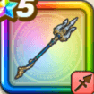

真竜槍・オチェアーノ
攻略班 9.5点 / 誰かになる冒険へ絶海のジャベリングランヴォルテクスきまぐれな海大漁の兆し激突!マール・デ・ドラゴーン水の精霊の加護
くわしい特徴
【レベル別習得スキル】 Lv1【バトマス】攻撃力+5 Lv1【パラディン】守備力+5 Lv1【二刀】二刀流時の斬撃・体技によるダメージ+5% Lv10誰かになる冒険へ（消費MP：最大MPの15%）自身のレベルを戦闘中4上げまもりのたてとガード・みかわし無効の効果を付与。さらに継続レベルアップ効果を付与する(戦闘中1回のみ) Lv20絶海のジャベリン（消費MP：55）敵1体に威力800%のバギかデイン属性の斬撃ダメージを与える。自身が継続レベルアップ効果中なら威力が1,100%になり、たまに直撃する Lv30グランヴォルテクス（消費MP：61）敵全体にヒャド/バギ/ザバ属性730%斬撃ダメージを与え(ガード・みかわし無効・会心発生時に超会心化・メタル系に+99)ずぶ濡れにさせる Lv35植物系へのダメージ+5% Lv40ドラゴン系へのダメージ+5% Lv45攻撃力+12 Lv50きまぐれな海（消費MP：最大MPの1%）敵全体を天候に応じた確率でずぶ濡れにさせる。ずぶ濡れ中にヒャドかデインかザバ属性の攻撃を受けると両隣の敵に連鎖ダメージが発生 Lv50大漁の兆し（消費MP：7）戦闘開始時に敵にメタル系か水系が含まれているなら味方全体を優先して行動させる Lv50激突!マール・デ・ドラゴーン（消費MP：5）自身が会心の一撃を3回発生させると敵全体に威力700%のガード・みかわし無効の斬撃ダメージでマール・デ・ドラゴーンが直撃する Lv50水の精霊の加護（消費MP：10）一部を除く敵の攻撃でHP50%以下になると悪い状態変化・状態異常を防ぎ敵のヒャド・ザバ属性攻撃でHPを回復する効果を付与(戦闘中1回のみ) 【限界突破スキル】 1凸スキルの斬撃・体技ダメージ+7% 2凸スキルの斬撃・体技ダメージ+7% 3凸スキルの斬撃・体技ダメージ+7% 4凸スキルの斬撃・体技ダメージ+7%